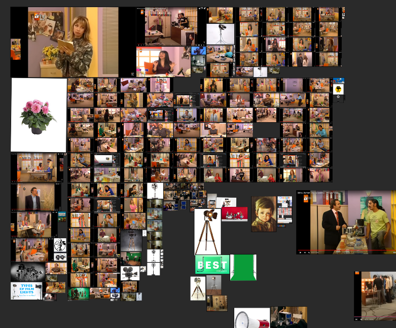
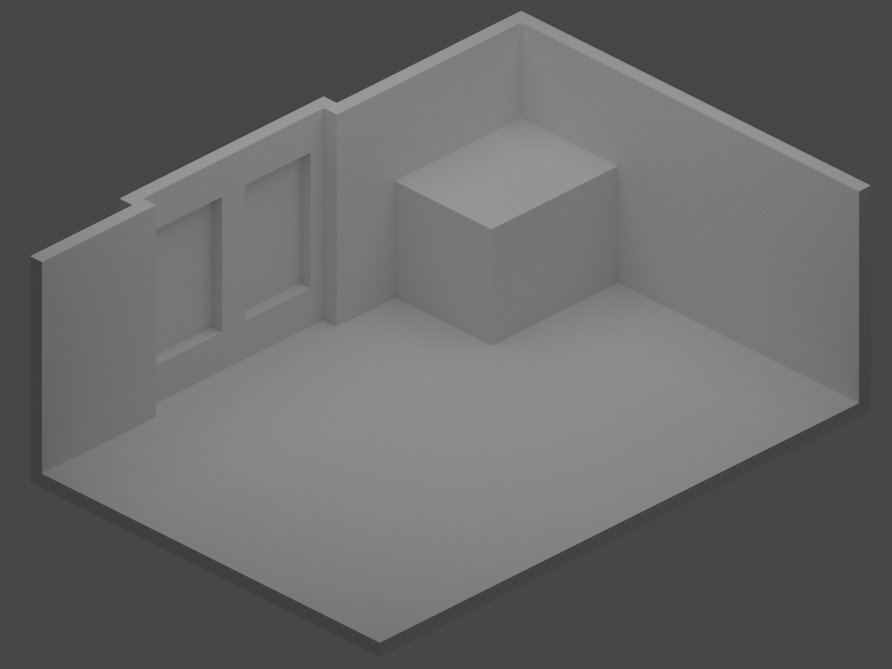
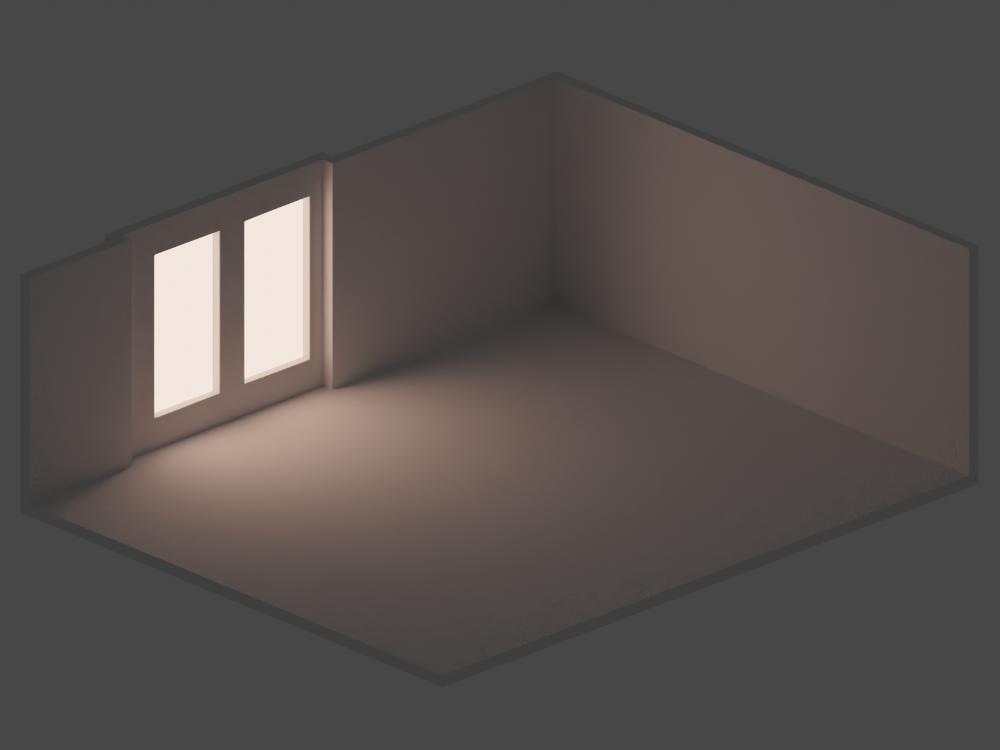
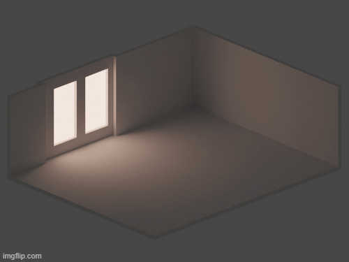

This project is a fan project. It is an illustration I created for the "Avrupa Yakası" TV series, which I have been a fan of since childhood.
Programs I used: Blender
Project duration: About 3 months
This project is one of my first completed projects. I started this project suddenly while watching "Avrupa Yakası" and wondering why I don't create something for it. Making the decision was quick, but the actual project took a long time for me. After watching tutorials in Blender, it was valuable for me to try to do it without relying on tutorials.
References
When starting the project, of course, I began by gathering a lot of references. During this time, I can say that I really memorized the office from the series season by season.
  Modeling
Of course, since it was a fan art, I couldn't use ready-made assets, so I modeled all the office items strictly following the references.
Since there are changes in the office according to the seasons, I selected some models based on their respective seasons. For example, wardrobe models or flower models change in all seasons, or desktop computers are replaced by laptops. At this point, I had to make choices for models between seasons.
Actually, objects outside the office, such as cameras and set items, were not originally included in the project, but adding them to fill the scene added a lot to the project in my opinion.
Lighting
Since my technical knowledge about lighting is insufficient, I have conducted many experiments and I can say that I have chosen the one that is most pleasing to my eye.
Here I am sharing more render with you.